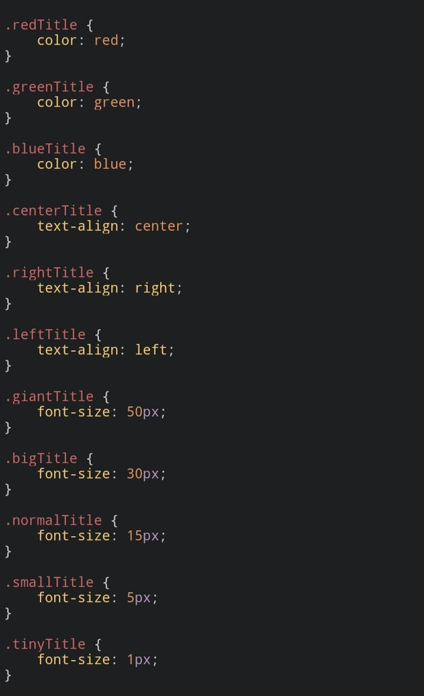

CSS
Cascading Style Sheets (CSS) is a style sheet language used for specifying the presentation and styling of a document written in a markup language such as HTML or XML (including XML dialects such as SVG, MathML or XHTML).[1] CSS is a cornerstone technology of the World Wide Web, alongside HTML and JavaScript.[2]
CSS is designed to enable the separation of content and presentation, including layout, colors, and fonts.[3] This separation can improve content accessibility;[further explanation needed] provide more flexibility and control in the specification of presentation characteristics; enable multiple web pages to share formatting by specifying the relevant CSS in a separate .css file, which reduces complexity and repetition in the structural content; and enable the .css file to be cached to improve the page load speed between the pages that share the file and its formatting.
Separation of formatting and content also makes it feasible to present the same markup page in different styles for different rendering methods, such as on-screen, in print, by voice (via speech-based browser or screen reader), and on Braille-based tactile devices. CSS also has rules for alternate formatting if the content is accessed on a mobile device.[4]
The name cascading comes from the specified priority scheme to determine which declaration applies if more than one declaration of a property match a particular element. This cascading priority scheme is predictable.
The CSS specifications are maintained by the World Wide Web Consortium (W3C). Internet media type (MIME type) text/css is registered for use with CSS by RFC 2318 (March 1998). The W3C operates a free CSS validation service for CSS documents.[5]
In addition to HTML, other markup languages support the use of CSS including XHTML, plain XML, SVG, and XUL. CSS is also used in the GTK widget toolkit.
|  | |
| Filename extension | .css |
| Internet media type | text/css |
| Uniform Type Identifier (UTI) | public.css |
| Developed by | World Wide Web Consortium (W3C) |